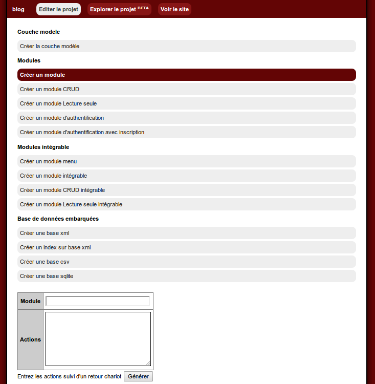
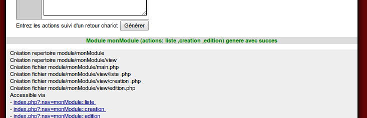

Le générateur web: Builder
Présentation
Le mkbuilder est l'équivalent de la ligne de commande sur d'autres frameworks.Il fut créé pour ça d'ailleurs, pour les commandeEnLigneOphobe qui voulait avoir un framework facile à prendre en main
Ici, avec cette application, on télécharge le zip du framework, on le décompresse dans un repertoire web (le www ou htdocs d'apache)
on se rend avec son navigateur à l'adresse du framework, par exemple (si à la racine) http://localhost/mkframework_vX.X
Et vous voila dans le mkbuilder qui vous permettra de commencer et d'administrer un projet facilement.
Vous pouvez grâce à lui:
- Créer une application vierge (normale ou bootstrap)
- Configurer sa connexion
- Générer la couche modele (classe model permettant d'interagir avec votre sgbd)
- Générer le CRUD (complet, read-only, multi ligne) pour une table
- Générer le CRUD pour une table avec la bibliothèque Guriddo
- Ajouter un module d'authentification avec/sans formulaire d'inscription
- Ajouter une gestion de droit mono/multi groupes (ACL)
- Générer un module menu à partir des modules existants
- Créer un formulaire assisté par l'application
- Créer un nouveau module
- Créer un module intégrable
- créer une base xml/csv/json/sqlite/mongodb
Menu
Market : Mettre à jour le builderMarket : Ajouter une extension au builder
Création d'un site
Lister les sites générés
Administrer un site
Générer la couche model
Générer un module CRUD (Create Read Update Delete)
Générer un module CRUD intégrable (Create Read Update Delete)
Créer un nouveau module
Market : Mettre à jour le builder
Gardez à jour les extensions du générateur (builder)Market : Ajouter une extension au builder
La possibiliter d'ajouter/proposer de nouvelles extensions
Création d'un site
On tape le nom du site à créer
Lister les sites générés
Cliquez sur l'onglet de droite pour lister les projets générésAdministrer un site
Une fois cliqué, un menu liste les actions disponiblesGénérer la couche model
Une fois la/les configs de connexion renseignés, générer le modelGénérer un module CRUD (Create Read Update Delete)

Choisissez la table a générer le CRUD

Cliquez sur une table, il liste les champs, leur type et si ils sont primaires

Générer un module CRUD intégrable (Create Read Update Delete)

Choisissez la table d'origine pour générer module CRUD intégrable

Générér le CRUD pour une table, il liste les champs, leur type et si ils sont primaires

Créer un nouveau module


Explorer vos projets
Vidéo présentant l'explorateur de projet: sur youTube